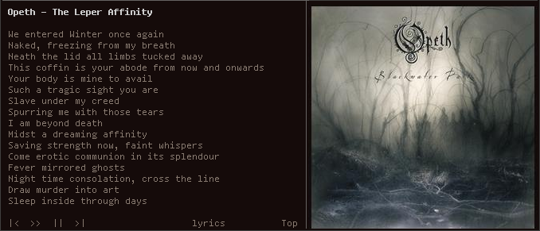

Lyvi
Lyvi is a simple command-line lyrics (and more!) viewer for various audio players.
Features
- Mouse support
- Displays lyrics, artist info and guitar tabs
- Displays album art and artist photos, with tmux support
- More than 20 providers (thanks to glyr)
- Player control with configurable keybindings or statusbar buttons
- Cache for downloaded metadata
- Configuration file
Supported players
- Audacious
- C* Music Player
- Clementine
- Consonance
- DeaDBeeF
- Gmusicbrowser
- Guayadeque
- MOC
- MPlayer
- Mpg123
- Music Player Daemon
- Pianobar
- Qmmp
- Rhythmbox
- Shell-fm
- Spotify
- VLC Media Player
Screencast
User reviews
Get it!
Arch Linux: AUR package
For other distributions, configuration and more information, see Wiki